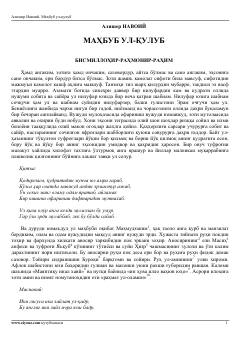

MUAlisher Navoiyning insoniy fazilatlar va axloqiy qoidalarga bag'ishlangan mumtoz asari.
Alisher Navoiyning "Mahbub ul-qulub" asari muallifning boy hayotiy tajribalari va kuzatishlari asosida yozilgan axloqiy-falsafiy risola hisoblanadi. Kitob insoniy fazilatlar, illatlar, jamiyat qatlamlari va turli kasb egalarining xususiyatlarini tahlil qiluvchi uch qismdan iborat. Asar o'quvchilarni yaxshilikka yetaklash, yomon illatlardan ogohlantirish va hayotiy hikmatlardan saboq chiqarishga qaratilgan.